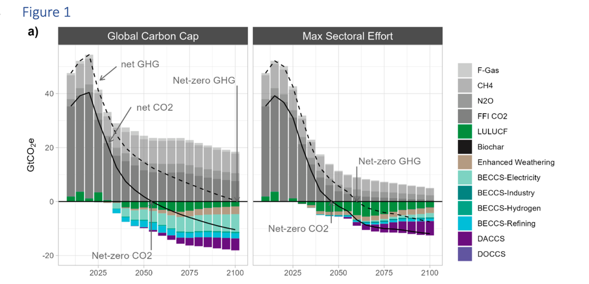

According to the research findings, to achieve net-zero CO2 emissions within the global carbon limit, greenhouse gas emissions from the electricity, buildings, industry, energy supply, and transportation sectors must be significantly reduced compared to 2015 levels.
The achievement of the Paris Agreement’s goals of below 2°C or 1.5°C is challenging without large-scale carbon dioxide removal (CDR). Nations often allocate significant amounts of residual emissions to be offset using CDR in their long-term strategies to achieve net-zero emissions. This includes emissions that are costly or beyond the direct control of companies or industries. While acknowledging the importance of CDR, growing attention has been directed towards concerns about the sustainability, feasibility, and political economy of CDR, limiting the perceived necessity of CDR as these concerns are investigated in the literature. However, as of my last knowledge update there is no existing IAM study that evaluates how comprehensive adoption of behavioral changes and emerging technologies to mitigate greenhouse gas emissions could contribute to reducing the role of CDR portfolios. Therefore, this study assesses, using GCAM, the extent to which maximum efforts to reduce gross emissions in power, fuel supply, transportation, buildings, industry, and agriculture can minimize the demand for CDR.

In a new paper published in Environmental Research Letters, a sectoral strengthening approach was applied, incorporating demand reduction through behavioral changes, increased energy and material efficiency, rapid electrification of transportation, reduction of non-CO2 greenhouse gases, and limitations on bioenergy and geologic carbon storage. The “Maximum Sectoral Effort” scenario was formulated to minimize residual emissions while quantifying the lower limit of CDR needed to meet the requirements of the Paris Agreement. This study imposed a constraint on greenhouse gas emissions using GCAM 6.0 to limit global warming to below 1.5˚C until 2100. In the “Maximum Sectoral Effort” scenario, efforts focused on increasing the adoption of low-carbon technologies to further reduce CDR.
According to the research findings, to achieve net-zero CO2 emissions within the global carbon limit, greenhouse gas emissions from the electricity, buildings, industry, energy supply, and transportation sectors must be significantly reduced compared to 2015 levels. Maximum sectoral effort drives additional greenhouse gas reductions and increases removals related to land use, land-use change, and forestry, thereby reducing CDR and leading to net greenhouse gas reduction. By 2050, significant emissions reductions are observed across most sectors to achieve net-zero CO2 emissions. CO2 emissions from electricity production using fossil fuels are nearly eliminated. The expanded use of electric vehicles and zero-carbon fuels can significantly reduce CO2 emissions across various sectors. Phasing out fossil fuels gradually leads to substantial reductions in CH4 emissions as well.
Reductions in non-CO2 emissions and increased carbon storage in soils have a significant impact on climate temperature changes. In the long term, shifts towards plant-based diets and decreased fossil fuel extraction lead to reduced methane emissions, resulting in decreased climate forcing. Additionally, enhanced CO2 mitigation from land use strengthens the CO2 emission constraints, further reducing climate forcing. These changes collectively result in low temperature rises, while overshooting the 1.5°C warming target but maintaining it at a lower level under Maximum Sectoral Effort, significantly reducing end-of-century warming. All scenarios are aligned with 1.5˚C scenarios, but comparing total emissions and CDR reveals significant differences between our scenario and AR6. Maximum Sectoral Effort leads to a reduction in gross greenhouse gas emissions and minimize reliance on CDR. Almost complete elimination of CO2 emissions from electricity and buildings by mid-century aligns with the highest ambition level in AR6 scenarios.
IAM models often simulate technological development through carbon pricing. However, initial CDR technologies may incur higher costs than predicted by the models, especially when considering behavioral or demand-side policies or when it’s difficult to account for ancillary benefits. To address these issues, the authors have developed scenarios with ambitious levels of technology and behavioral aspirations across all sectors. These efforts demonstrate the potential to achieve net-zero CO2 and halve CDR requirements. Additionally, policies that reduce reliance on unsustainable diet and biofuels while utilizing soil-based carbon storage can expedite the reduction of gross CO2 emissions.
“Let’s face it: decades of delayed climate action cornered us into an uncomfortable place where we can’t bring the global temperature back down to 1.5 degrees without massive CO2 removal,” said Prof. Haewon McJeon of KAIST Graduate School of Green Growth and Sustainability, who coauthored the study. “At this point we need both: early emission reduction efforts in all sectors of the economy, as well as R&D investments in CO2 removal technologies in order to scale up the drawdown efforts. Only when both efforts are successful can we achieve a long-term temperature change below 1.5 degrees.”
Read the full paper here: https://doi.org/10.1088/1748-9326/ad456d
한국어 요약
잔류 배출에 대한 야심찬 노력은 이산화탄소 제거를 줄이고 넷제로에서 미래의 최고 온도를 낮출 수 있다.
파리 협약의 목표인 2°C 또는 1.5°C 이하 상승을 달성하기 위해서는 대규모 이산화탄소 제거(CDR)가 필수적이므로 많은 국가가 장기적인 넷제로 달성 전략에 CDR을 이용하여 상쇄하는 상당한 수준의 잔여 배출을 허용한다. 그러나 CDR의 지속 가능성, 실현 가능성, 정치 경제에 대한 우려가 커지고 있는 가운데 카이스트 녹색성장지속가능대학원 전해원 방문교수를 포함한 연구진은 통합 평가 모델을 사용하여, 부문별 온실가스 배출을 줄이고 CDR에 대한 필요성을 줄이는 “최대 부문별 노력” 시나리오 연구를 Environmental Research Letters 저널에 출간하였다.
이 연구는 모든 부문에서 강력한 기술과 행동 정책을 통한 감축 노력으로 넷제로를 달성함과 동시에 CDR에 대한 의존도를 줄일 수 있음을 시사한다. 이산화탄소 배출 감축과 토지 사용 변화를 통해 온도를 1.5°C 이하로 유지하는 것의 중요성을 보여주며 지속가능성이 약한 CDR에 집중하는 것보다 탄소 배출을 줄이는 것이 기후 변화의 물리적 위험과 에너지시스템의 전환과정에서 위험을 줄일 수 있어 더 나은 전략임을 제시한다. 하지만 여전히 저탄소 기술과 행동변화에 대한 불확실성을 고려할 때, CDR의 역할을 무시할 수는 없다. KAIST의 전해원 방문교수는 “대규모 이산화탄소 제거 없이는 글로벌 온도를 1.5도로 낮추는 것이 불가능하며, 이 시점에서 우리에게 필요한 것은 경제 전 부문에서의 조기 배출 감축 노력 뿐만 아니라 이산화탄소 제거 기술에 대한 연구 및 개발 활동의 노력을 확대하는 것이다.”라고 시사한다.